shapr: Explaining individual
machine learning predictions with Shapley values
Camilla Lingjærde, Martin Jullum, Lars Henry Berge Olsen & Nikolai Sellereite
Source:vignettes/understanding_shapr.Rmd
understanding_shapr.RmdIntroduction
The shapr package implements an extended version of the
Kernel SHAP method for approximating Shapley values (Lundberg and Lee (2017)), in which dependence
between the features is taken into account (Aas,
Jullum, and Løland (2021)). Estimation of Shapley values is of
interest when attempting to explain complex machine learning models. Of
existing work on interpreting individual predictions, Shapley values is
regarded to be the only model-agnostic explanation method with a solid
theoretical foundation (Lundberg and Lee
(2017)). Kernel SHAP is a computationally efficient approximation
to Shapley values in higher dimensions, but it assumes independent
features. Aas, Jullum, and Løland (2021)
extend the Kernel SHAP method to handle dependent features, resulting in
more accurate approximations to the true Shapley values. See the paper
(Aas, Jullum, and Løland (2021)) for
further details.
Overview of Package
Functions
Here is an overview of the main functions. You can read their
documentation and see examples with ?function_name.
| Function Name | Description |
|---|---|
explain |
Computes kernel SHAP values for test data. |
explain_forecast |
Analogous to explain, but for explaining
forecasts from time series models. |
plot.shapr |
Plots the individual prediction explanations. Uses the
ggplot and ggbeeswarm package. |
The Kernel SHAP Method
Assume a predictive model \(f(\boldsymbol{x})\) for a response value \(y\) with features \(\boldsymbol{x}\in \mathbb{R}^M\), trained on a training set, and that we want to explain the predictions for new sets of data. This may be done using ideas from cooperative game theory, letting a single prediction take the place of the game being played and the features the place of the players. Letting \(N\) denote the set of all \(M\) players, and \(S \subseteq N\) be a subset of \(|S|\) players, the “contribution” function \(v(S)\) describes the total expected sum of payoffs the members of \(S\) can obtain by cooperation. The Shapley value (Shapley (1953)) is one way to distribute the total gains to the players, assuming that they all collaborate. The amount that player \(i\) gets is then
\[\phi_i(v) = \phi_i = \sum_{S \subseteq N \setminus\{i\}} \frac{|S| ! (M-| S| - 1)!}{M!}(v(S\cup \{i\})-v(S)),\]
that is, a weighted mean over all subsets \(S\) of players not containing player \(i\). Lundberg and Lee (2017) define the contribution function for a certain subset \(S\) of these features \(\boldsymbol{x}_S\) as \(v(S) = \mbox{E}[f(\boldsymbol{x})|\boldsymbol{x}_S]\), the expected output of the predictive model conditional on the feature values of the subset. Lundberg and Lee (2017) names this type of Shapley values SHAP (SHapley Additive exPlanation) values. Since the conditional expectations can be written as
\[\begin{equation} \label{eq:CondExp} E[f(\boldsymbol{x})|\boldsymbol{x}_s=\boldsymbol{x}_S^*] = E[f(\boldsymbol{x}_{\bar{S}},\boldsymbol{x}_S)|\boldsymbol{x}_S=\boldsymbol{x}_S^*] = \int f(\boldsymbol{x}_{\bar{S}},\boldsymbol{x}_S^*)\,p(\boldsymbol{x}_{\bar{S}}|\boldsymbol{x}_S=\boldsymbol{x}_S^*)d\boldsymbol{x}_{\bar{S}}, \end{equation}\]the conditional distributions \(p(\boldsymbol{x}_{\bar{S}}|\boldsymbol{x}_S=\boldsymbol{x}_S^*)\) are needed to compute the contributions. The Kernel SHAP method of Lundberg and Lee (2017) assumes feature independence, so that \(p(\boldsymbol{x}_{\bar{S}}|\boldsymbol{x}_S=\boldsymbol{x}_S^*)=p(\boldsymbol{x}_{\bar{S}})\). If samples \(\boldsymbol{x}_{\bar{S}}^{k}, k=1,\ldots,K\), from \(p(\boldsymbol{x}_{\bar{S}}|\boldsymbol{x}_S=\boldsymbol{x}_S^*)\) are available, the conditional expectation in above can be approximated by
\[\begin{equation} v_{\text{KerSHAP}}(S) = \frac{1}{K}\sum_{k=1}^K f(\boldsymbol{x}_{\bar{S}}^{k},\boldsymbol{x}_S^*). \end{equation}\]In Kernel SHAP, \(\boldsymbol{x}_{\bar{S}}^{k},
k=1,\ldots,K\) are sampled from the \(\bar{S}\)-part of the training data,
independently of \(\boldsymbol{x}_{S}\). This is motivated by
using the training set as the empirical distribution of \(\boldsymbol{x}_{\bar{S}}\), and assuming
that \(\boldsymbol{x}_{\bar{S}}\) is
independent of \(\boldsymbol{x}_S=\boldsymbol{x}_S^*\). Due
to the independence assumption, if the features in a given model are
highly dependent, the Kernel SHAP method may give a completely wrong
answer. This can be avoided by estimating the conditional distribution
\(p(\boldsymbol{x}_{\bar{S}}|\boldsymbol{x}_S=\boldsymbol{x}_S^*)\)
directly and generating samples from this distribution. With this small
change, the contributions and Shapley values may then be approximated as
in the ordinary Kernel SHAP framework. Aas,
Jullum, and Løland (2021) propose three different approaches for
estimating the conditional probabilities which are implemented:
empirical, gaussian and copula.
The package also implements the method ctree method from
Redelmeier, Jullum, and Aas (2020). The
original independence approach of Lundberg and Lee (2017) is also available. The
methods may also be combined, such that e.g. one method is used when
conditioning on a small number of features, while another method is used
otherwise.
Multivariate Gaussian Distribution Approach
The first approach arises from the assumption that the feature vector
\(\boldsymbol{x}\) stems from a
multivariate Gaussian distribution with some mean vector \(\boldsymbol{\mu}\) and covariance matrix
\(\boldsymbol{\Sigma}\). Under this
assumption, the conditional distribution \(p(\boldsymbol{x}_{\bar{\mathcal{S}}}
|\boldsymbol{x}_{\mathcal{S}}=\boldsymbol{x}_{\mathcal{S}}^*)\)
is also multivariate Gaussian
\(\text{N}_{|\bar{\mathcal{S}}|}(\boldsymbol{\mu}_{\bar{\mathcal{S}}|\mathcal{S}},\boldsymbol{\Sigma}_{\bar{\mathcal{S}}|\mathcal{S}})\),
with analytical expressions for the conditional mean vector \(\boldsymbol{\mu}_{\bar{\mathcal{S}}|\mathcal{S}}\)
and covariance matrix \(\boldsymbol{\Sigma}_{\bar{\mathcal{S}}|\mathcal{S}}\),
see Aas, Jullum, and Løland (2021) for
details. Hence, instead of sampling from the marginal empirical
distribution of \(\boldsymbol{x}_{\bar{\mathcal{S}}}\)
approximated by the training data, we can sample from the Gaussian
conditional distribution, which is fitted using the training data. Using
the resulting samples \(\boldsymbol{x}_{\bar{\mathcal{S}}}^k,
k=1,\ldots,K\), the conditional expectations be approximated as
in the Kernel SHAP.
Gaussian Copula Approach
If the features are far from multivariate Gaussian, an alternative approach is to instead represent the marginals by their empirical distributions, and model the dependence structure by a Gaussian copula. Assuming a Gaussian copula, we may convert the marginals of the training data to Gaussian features using their empirical distributions, and then fit a multivariate Gaussian distribution to these.
To produce samples from the conditional distribution \(p(\boldsymbol{x}_{\bar{\mathcal{S}}} |\boldsymbol{x}_{\mathcal{S}}=\boldsymbol{x}_{\mathcal{S}}^*)\), we convert the marginals of \(\boldsymbol{x}_{\mathcal{S}}\) to Gaussians, sample from the conditional Gaussian distribution as above, and convert the marginals of the samples back to the original distribution. Those samples are then used to approximate the sample from the resulting multivariate Gaussian conditional distribution. While other copulas may be used, the Gaussian copula has the benefit that we may use the analytical expressions for the conditionals \(\boldsymbol{\mu}_{\bar{\mathcal{S}}|\mathcal{S}}\) and \(\boldsymbol{\Sigma}_{\bar{\mathcal{S}}|\mathcal{S}}\). Finally, we may convert the marginals back to their original distribution, and use the resulting samples to approximate the conditional expectations as in the Kernel SHAP.
Empirical Conditional Distribution Approach
If both the dependence structure and the marginal distributions of \(\boldsymbol{x}\) are very far from the Gaussian, neither of the two aforementioned methods will work very well. Few methods exists for the non-parametric estimation of conditional densities, and the classic kernel estimator (Rosenblatt (1956)) for non-parametric density estimation suffers greatly from the curse of dimensionality and does not provide a way to generate samples from the estimated distribution. For such situations, Aas, Jullum, and Løland (2021) propose an empirical conditional approach to sample approximately from \(p(\boldsymbol{x}_{\bar{\mathcal{S}}}|\boldsymbol{x}_{\mathcal{S}}^*)\). The idea is to compute weights \(w_{\mathcal{S}}(\boldsymbol{x}^*,\boldsymbol{x}^i),\ i=1,...,n_{\text{train}}\) for all training instances based on their Mahalanobis distances (in the \(S\) subset only) to the instance \(\boldsymbol{x}^*\) to be explained. Instead of sampling from this weighted (conditional) empirical distribution, Aas, Jullum, and Løland (2021) suggests a more efficient variant, using only the \(K\) instances with the largest weights:
\[v_{\text{condKerSHAP}}(\mathcal{S}) = \frac{\sum_{k=1}^K w_{\mathcal{S}}(\boldsymbol{x}^*, \boldsymbol{x}^{[k]}) f(\boldsymbol{x}_{\bar{\mathcal{S}}}^{[k]}, \boldsymbol{x}_{\mathcal{S}}^*)}{\sum_{k=1}^K w_{\mathcal{S}}(\boldsymbol{x}^*,\boldsymbol{x}^{[k]})},\]
The number of samples \(K\) to be used in the approximate prediction can for instance be chosen such that the \(K\) largest weights accounts for a fraction \(\eta\), for example \(0.9\), of the total weight. If \(K\) exceeds a certain limit, for instance \(5,000\), it might be set to that limit. A bandwidth parameter \(\sigma\) used to scale the weights, must also be specified. This choice may be viewed as a bias-variance trade-off. A small \(\sigma\) puts most of the weight to a few of the closest training observations and thereby gives low bias, but high variance. When \(\sigma \rightarrow \infty\), this method converges to the original Kernel SHAP assuming feature independence. Typically, when the features are highly dependent, a small \(\sigma\) is typically needed such that the bias does not dominate. Aas, Jullum, and Løland (2021) show that a proper criterion for selecting \(\sigma\) is a small-sample-size corrected version of the AIC known as AICc. As calculation of it is computationally intensive, an approximate version of the selection criterion is also suggested. Details on this is found in Aas, Jullum, and Løland (2021).
Conditional Inference Tree Approach
The previous three methods can only handle numerical data. This means that if the data contains categorical/discrete/ordinal features, the features first have to be one-hot encoded. When the number of levels/features is large, this is not feasible. An approach that handles mixed (i.e numerical, categorical, discrete, ordinal) features and both univariate and multivariate responses is conditional inference trees (Hothorn, Hornik, and Zeileis (2006)).
Conditional inference trees is a special tree fitting procedure that relies on hypothesis tests to choose both the splitting feature and the splitting point. The tree fitting procedure is sequential: first a splitting feature is chosen (the feature that is least independent of the response), and then a splitting point is chosen for this feature. This decreases the chance of being biased towards features with many splits (Hothorn, Hornik, and Zeileis (2006)).
We use conditional inference trees (ctree) to model the conditional distribution, \(p(\boldsymbol{x}_{\bar{\mathcal{S}}}|\boldsymbol{x}_{\mathcal{S}}^*)\), found in the Shapley methodology. First, we fit a different conditional inference tree to each conditional distribution. Once a tree is fit for given dependent features, the end node of \(\boldsymbol{x}_{\mathcal{S}}^*\) is found. Then, we sample from this end node and use the resulting samples, \(\boldsymbol{x}_{\bar{\mathcal{S}}}^k, k=1,\ldots,K\), when approximating the conditional expectations as in Kernel SHAP. See Redelmeier, Jullum, and Aas (2020) for more details.
The conditional inference trees are fit using the party and partykit packages (Hothorn and Zeileis (2015)).
Categorical Approach
When the features are all categorical, we can estimate the conditional expectations using basic statistical formulas. For example, if we have three features, \(x_1, x_2, x_3\) with three levels each (indicated as 1, 2, 3), and we are provided with a table of counts indicating how many times each combination of feature values occurs, we can estimate the marginal and conditional probabilities as follows. Marginal probabilities are estimated by dividing the number of times a given feature (or features) takes on a certain value in the data set with the total number of observations in the data set. Condititional probabilities (for example, \(P(X_1 = 1 | X_2 = 1)\)) are estimated by first subsetting the data set to reflect the conditioning (i.e., extracting all rows where \(X_2 = 1\)), and then dividing the number of times the feature on the left hand side of \(|\) takes the given value in this subset by the total number of observations in this subset. Once the marginal and conditional probabilities are estimated for all combinations of feature values, each conditional expectation can be calculated. For example, the expected value of \(X_1\) given \(X_2 = 1\) and \(X_3 = 2\) is \[E(X_1|X_2, X_3) = \sum_{x}x P(X_1 = x | X_2=1, X_3=2) = \sum_{x} x \frac{P(X_1 = x, X_2 = 1, X_3 = 2)}{P(X_2=1, X_3=2)}.\].
Examples
shapr supports computation of Shapley values with any
predictive model which takes a set of numeric features and produces a
numeric outcome. Note that the ctree method takes both numeric and
categorical variables. Check under “Advanced usage” for an example of
how this can be done.
The following example shows how a simple xgboost model
is trained using the airquality dataset, and how
shapr can be used to explain the individual predictions.
Note that the empirical conditional distribution approach is the default
(i.e. approach = "empirical"). The Gaussian, Gaussian
copula, ctree or independence approaches can be used instead by setting
the argument approach to either "gaussian",
"copula", "ctree", "categorical"
or "independence" in the code below.
library(xgboost)
library(data.table)
data("airquality")
data <- data.table::as.data.table(airquality)
data <- data[complete.cases(data), ]
x_var <- c("Solar.R", "Wind", "Temp", "Month")
y_var <- "Ozone"
ind_x_explain <- 1:6
x_train <- data[-ind_x_explain, ..x_var]
y_train <- data[-ind_x_explain, get(y_var)]
x_explain <- data[ind_x_explain, ..x_var]
# Fitting a basic xgboost model to the training data
model <- xgboost::xgboost(
data = as.matrix(x_train),
label = y_train,
nround = 20,
verbose = FALSE
)
# Specifying the phi_0, i.e. the expected prediction without any features
p0 <- mean(y_train)
# Computing the actual Shapley values with kernelSHAP accounting for feature dependence using
# the empirical (conditional) distribution approach with bandwidth parameter sigma = 0.1 (default)
explanation <- explain(
model = model,
x_explain = x_explain,
x_train = x_train,
approach = "empirical",
prediction_zero = p0
)
# Printing the Shapley values for the test data.
# For more information about the interpretation of the values in the table, see ?shapr::explain.
print(explanation$shapley_values)
#> none Solar.R Wind Temp Month
#> 1: 43.08571 13.2117337 4.785645 -25.57222 -5.599230
#> 2: 43.08571 -9.9727747 5.830694 -11.03873 -7.829954
#> 3: 43.08571 -2.2916185 -7.053393 -10.15035 -4.452481
#> 4: 43.08571 3.3254595 -3.240879 -10.22492 -6.663488
#> 5: 43.08571 4.3039571 -2.627764 -14.15166 -12.266855
#> 6: 43.08571 0.4786417 -5.248686 -12.55344 -6.645738
# Plot the resulting explanations for observations 1 and 6
plot(explanation, bar_plot_phi0 = FALSE, index_x_explain = c(1, 6))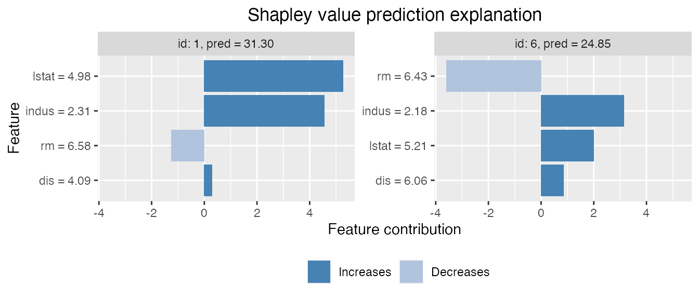
There are multiple plot options specified by the
plot_type argument in plot. The
waterfall option shows the changes in the prediction score
due to each features contribution (their Shapley values):
There are multiple plot options specified by the
plot_type argument in plot. The
waterfall option shows the changes in the prediction score
due to each features contribution (their Shapley values):
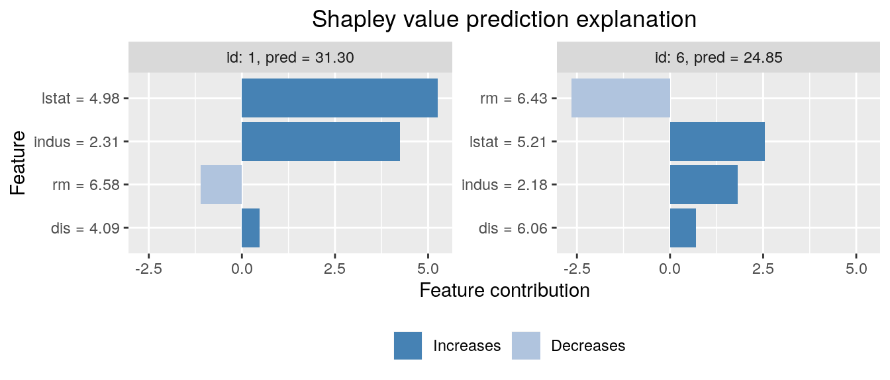
The other two plot options, "beeswarm" and
"scatter", can be useful when you have many observations
that you want to explain. For the purpose of illustration, we explain
the whole airquality dataset (including the training data)
for these plot types. The plot_type = "beeswarm" summarises
the distribution of the Shapley values along the x-axis across all
features. Each point gives the Shapley value of a given instance, where
the points are colored by the feature value of that instance:
x_explain_many <- data[, ..x_var]
explanation_plot <- explain(
model = model,
x_explain = x_explain_many,
x_train = x_train,
approach = "empirical",
prediction_zero = p0
)
plot(explanation_plot, plot_type = "beeswarm")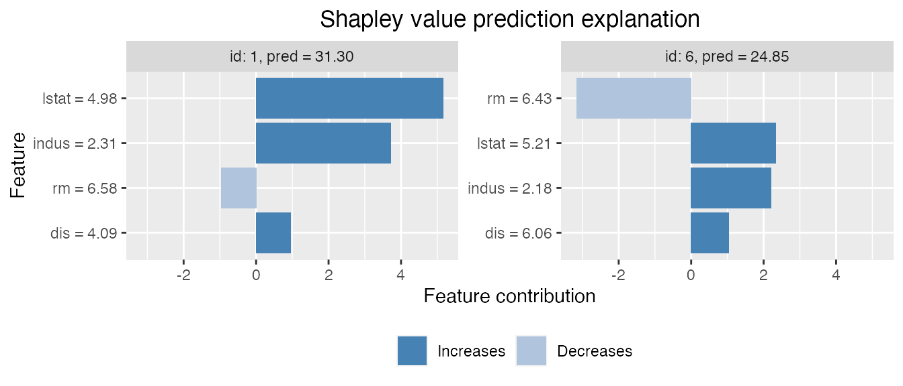
The plot_type = "scatter" plots the feature values on
the x-axis and Shapley values on the y-axis, as well as (optionally) a
background scatter_hist showing the distribution of the feature
data:
plot(explanation_plot, plot_type = "scatter", scatter_hist = TRUE)We can use mixed (i.e continuous, categorical, ordinal) data with ctree. Use ctree with mixed data in the following manner:
# convert the month variable to a factor
data[, Month_factor := as.factor(Month)]
data_train_cat <- data[-ind_x_explain, ]
data_explain_cat <- data[ind_x_explain, ]
x_var_cat <- c("Solar.R", "Wind", "Temp", "Month_factor")
x_train_cat <- data_train_cat[, ..x_var_cat]
x_explain_cat <- data_explain_cat[, ..x_var_cat]
# Fitting an lm model here as xgboost does not handle categorical features directly
# (work around in example below)
lm_formula <- as.formula(paste0(y_var, " ~ ", paste0(x_var_cat, collapse = " + ")))
model_lm_cat <- lm(lm_formula, data_train_cat)
p0 <- mean(y_train)
explanation_lm_cat <- explain(
model = model_lm_cat,
x_explain = x_explain_cat,
x_train = x_train_cat,
approach = "ctree",
prediction_zero = p0
)
# Plot the resulting explanations for observations 1 and 6, excluding
# the no-covariate effect
plot(explanation_lm_cat, bar_plot_phi0 = FALSE, index_x_explain = c(1, 6))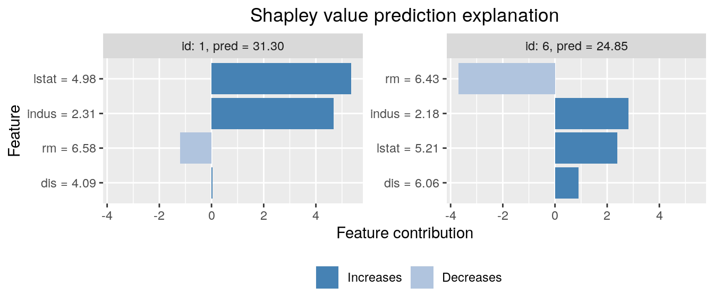
We can specify parameters used to build the conditional inference trees in the following manner. Default values are based on Hothorn, Hornik, and Zeileis (2006).
# Use the conditional inference tree approach
# We can specify parameters used to building trees by specifying mincriterion,
# minsplit, minbucket
explanation_ctree <- explain(
model = model_lm_cat,
x_explain = x_explain_cat,
x_train = x_train_cat,
approach = "ctree",
prediction_zero = p0,
ctree.mincriterion = 0.80,
ctree.minsplit = 20,
ctree.minbucket = 20
)
# Default parameters (based on (Hothorn, 2006)) are:
# mincriterion = 0.95
# minsplit = 20
# minbucket = 7If all features are categorical, one may use the categorical approach as follows:
# For the sake of illustration, convert ALL features to factors
data[, Solar.R_factor := as.factor(cut(Solar.R, 10))]
data[, Wind_factor := as.factor(cut(Wind, 3))]
data[, Temp_factor := as.factor(cut(Temp, 2))]
data[, Month_factor := as.factor(Month)]
data_train_all_cat <- data[-ind_x_explain, ]
data_explain_all_cat <- data[ind_x_explain, ]
x_var_all_cat <- c("Solar.R_factor", "Wind_factor", "Temp_factor", "Month_factor")
x_train_all_cat <- data_train_all_cat[, ..x_var_all_cat]
x_explain_all_cat <- data_explain_all_cat[, ..x_var_all_cat]
# Fit an lm model here
lm_formula_all_cat <- as.formula(paste0(y_var, " ~ ", paste0(x_var_all_cat, collapse = " + ")))
model_lm_all_cat <- lm(lm_formula_all_cat, data_train_all_cat)
explanation_cat_method <- explain(
model = model_lm_all_cat,
x_explain = x_explain_all_cat,
x_train = x_train_all_cat,
approach = "categorical",
prediction_zero = p0
)Shapley values can be used to explain any predictive model. For
predictive models taking time series as input,
approach='timeseries' can be used. In such models, joint
behavior of consecutive time points is often more important for the
outcome than the single time points. Therefore, it makes sense to derive
Shapley value segments of the time series instead of for each single
time point. In shapr this can be achieved through the
group attribute. Other optional parameters of
approach='timeseries' are
timeseries.fixed_sigma_vec and
timeseries.bounds (a vector indicating upper and lower
bounds of the time series if necessary).
# Simulate time series data with AR(1)-structure
set.seed(1)
data_ts <- data.frame(matrix(NA, ncol = 41, nrow = 4))
for (n in 1:100) {
set.seed(n)
e <- rnorm(42, mean = 0, sd = 1)
m_1 <- 0
for (i in 2:length(e)) {
m_1[i] <- 1 + 0.8 * m_1[i - 1] + e[i]
}
data_ts[n, ] <- m_1[-1]
}
data_ts <- data.table::as.data.table(data_ts)
x_var_ts <- paste0("X", 1:40)
y_var_ts <- "X41"
ind_x_explain <- 1:6
data_ts_train <- data_ts[-ind_x_explain]
# Creating a predictive model (for illustration just predicting the next point in the time series with a linear model)
lm_ts_formula <- as.formula(X41 ~ .)
model_lm_ts <- lm(lm_ts_formula, data_ts_train)
x_explain_ts <- data_ts[ind_x_explain, ..x_var_ts]
x_train_ts <- data_ts[-ind_x_explain, ..x_var_ts]
# Spitting the time series into 4 segments
group_ts <- list(
S1 = paste0("X", 1:10),
S2 = paste0("X", 11:20),
S3 = paste0("X", 21:30),
S4 = paste0("X", 31:40)
)
p0_ts <- mean(unlist(data_ts_train[, ..y_var_ts]))
explanation_timeseries <- explain(
model = model_lm_ts,
x_explain = x_explain_ts,
x_train = x_train_ts,
approach = "timeseries",
prediction_zero = p0_ts,
group = group_ts
)MSEv evaluation criterion
We can use the \(\operatorname{MSE}_{v}\) criterion proposed by Frye et al. (2021), and later used by, e.g., Olsen et al. (2022) and Olsen et al. (2023), to evaluate and rank the approaches/methods. The \(\operatorname{MSE}_{v}\) is given by
\[\begin{align} \label{eq:MSE_v} \operatorname{MSE}_{v} = \operatorname{MSE}_{v}(\text{method } \texttt{q}) = \frac{1}{N_\mathcal{S}} \sum_{\mathcal{S} \in \mathcal{P}^*(\mathcal{M})} \frac{1}{N_\text{explain}} \sum_{i=1}^{N_\text{explain}} \left( f(\boldsymbol{x}^{[i]}) - {\hat{v}}_{\texttt{q}}(\mathcal{S}, \boldsymbol{x}^{[i]})\right)^2\!, \end{align}\]where \({\hat{v}}_{\texttt{q}}\) is the estimated contribution function using method \(\texttt{q}\) and \(N_\mathcal{S} = |\mathcal{P}^*(\mathcal{M})| = 2^M-2\), i.e., we have removed the empty (\(\mathcal{S} = \emptyset\)) and the grand combinations (\(\mathcal{S} = \mathcal{M}\)) as they are method independent. Meaning that these two combinations do not influence the ranking of the methods as the methods are not used to compute the contribution function for them.
The motivation behind the \(\operatorname{MSE}_{v}\) criterion is that \(\mathbb{E}_\mathcal{S}\mathbb{E}_{\boldsymbol{x}} (v_{\texttt{true}}(\mathcal{S},\boldsymbol{x}) - \hat{v}_{\texttt{q}}(\mathcal{S}, \boldsymbol{x}))^2\) can be decomposed as
\[\begin{align} \label{eq:expectation_decomposition} \begin{split} \mathbb{E}_\mathcal{S}\mathbb{E}_{\boldsymbol{x}} (v_{\texttt{true}}(\mathcal{S}, \boldsymbol{x})- \hat{v}_{\texttt{q}}(\mathcal{S}, \boldsymbol{x}))^2 &= \mathbb{E}_\mathcal{S}\mathbb{E}_{\boldsymbol{x}} (f(\boldsymbol{x}) - \hat{v}_{\texttt{q}}(\mathcal{S}, \boldsymbol{x}))^2 \\ &\phantom{\,\,\,\,\,\,\,}- \mathbb{E}_\mathcal{S}\mathbb{E}_{\boldsymbol{x}} (f(\boldsymbol{x})-v_{\texttt{true}}(\mathcal{S}, \boldsymbol{x}))^2, \end{split} \end{align}\]see Appendix A in Covert, Lundberg, and Lee (2020). The first term on the right-hand side of the equation above can be estimated by \(\operatorname{MSE}_{v}\), while the second term is a fixed (unknown) constant not influenced by the approach . Thus, a low value of \(\operatorname{MSE}_{v}\) indicates that the estimated contribution function \(\hat{v}_{\texttt{q}}\) is closer to the true counterpart \(v_{\texttt{true}}\) than a high value.
In shapr, we allow for weighting the combinations in the
\(\operatorname{MSE}_{v}\) evaluation
criterion either uniformly or by using the corresponding Shapley kernel
weights (or the sampling frequencies when sampling of combinations is
used). This is determined by the logical parameter
MSEv_uniform_comb_weights in the explain()
function, and the default is to do uniform weighting, that is,
MSEv_uniform_comb_weights = TRUE.
Advantage:
An advantage of the \(\operatorname{MSE}_{v}\) criterion is that \(v_\texttt{true}\) is not involved. Thus, we can apply it as an evaluation criterion to real-world data sets where the true Shapley values are unknown.
Disadvantages:
First, we can only use the \(\operatorname{MSE}_{v}\) criterion to rank the methods and not assess their closeness to the optimum since the minimum value of the \(\operatorname{MSE}_{v}\) criterion is unknown. Second, the criterion evaluates the contribution functions and not the Shapley values.
Note that Olsen et al. (2023) observed a relatively linear relationship between the \(\operatorname{MSE}_{v}\) criterion and the mean absolute error \((\operatorname{MAE})\) between the true and estimated Shapley values in extensive simulation studies where the true Shapley values were known. That is, a method that achieves a low \(\operatorname{MSE}_{v}\) score also tends to obtain a low \(\operatorname{MAE}\) score, and vice versa.
Confidence intervals
The \(\operatorname{MSE}_{v}\)
criterion can be written as \(\operatorname{MSE}_{v} =
\frac{1}{N_\text{explain}}\sum_{i=1}^{N_\text{explain}}
\operatorname{MSE}_{v,\text{explain }i}\). We can therefore use
the central limit theorem to compute an approximate confidence interval
for the \(\operatorname{MSE}_{v}\)
criterion. We have that \(\operatorname{MSE}_{v} \pm
t_{\alpha/2}\frac{\operatorname{SD}(\operatorname{MSE}_{v})}{\sqrt{N_\text{explain}}}\)
is a \((1-\alpha/2)\%\) approximate
confidence interval for the evaluation criterion, where \(t_{\alpha/2}\) is the \(\alpha/2\) percentile of the \(T_{N_\text{explain}-1}\) distribution. Note
that \(N_\text{explain}\) should be
large (rule of thumb is at least \(30\)) for the central limit theorem to be
valid. The quantities \(\operatorname{MSE}_{v}\) and \(\frac{\operatorname{SD}(\operatorname{MSE}_{v})}{\sqrt{N_\text{explain}}}\)
are returned by the explain() function in the
MSEv list of data tables. We can also compute similar
approximate confidence interval for \(\operatorname{MSE}_{v}\) criterion for each
combination/coalition when only averaging over the observations.
However, it does not make sense in the other direction, i.e., when only
averaging over the combinations for each observation, as each
combination is a different prediction tasks.
MSEv examples
Start by explaining the predictions by using different methods and combining them into lists.
# We use more explicands here for more stable confidence intervals
ind_x_explain <- 1:25
x_train <- data[-ind_x_explain, ..x_var]
y_train <- data[-ind_x_explain, get(y_var)]
x_explain <- data[ind_x_explain, ..x_var]
# Fitting a basic xgboost model to the training data
model <- xgboost::xgboost(
data = as.matrix(x_train),
label = y_train,
nround = 20,
verbose = FALSE
)
# Specifying the phi_0, i.e. the expected prediction without any features
p0 <- mean(y_train)
# Independence approach
explanation_independence <- explain(
model = model,
x_explain = x_explain,
x_train = x_train,
approach = "independence",
prediction_zero = p0,
n_samples = 1e2,
n_batches = 5,
MSEv_uniform_comb_weights = TRUE
)
# Empirical approach
explanation_empirical <- explain(
model = model,
x_explain = x_explain,
x_train = x_train,
approach = "empirical",
prediction_zero = p0,
n_samples = 1e2,
n_batches = 5,
MSEv_uniform_comb_weights = TRUE
)
# Gaussian 1e1 approach
explanation_gaussian_1e1 <- explain(
model = model,
x_explain = x_explain,
x_train = x_train,
approach = "gaussian",
prediction_zero = p0,
n_samples = 1e1,
n_batches = 5,
MSEv_uniform_comb_weights = TRUE
)
# Gaussian 1e2 approach
explanation_gaussian_1e2 <- explain(
model = model,
x_explain = x_explain,
x_train = x_train,
approach = "gaussian",
prediction_zero = p0,
n_samples = 1e2,
n_batches = 5,
MSEv_uniform_comb_weights = TRUE
)
# Combined approach
explanation_combined <- explain(
model = model,
x_explain = x_explain,
x_train = x_train,
approach = c("gaussian", "empirical", "independence"),
prediction_zero = p0,
n_samples = 1e2,
n_batches = 5,
MSEv_uniform_comb_weights = TRUE
)
# Create a list of explanations with names
explanation_list_named <- list(
"Ind." = explanation_independence,
"Emp." = explanation_empirical,
"Gaus. 1e1" = explanation_gaussian_1e1,
"Gaus. 1e2" = explanation_gaussian_1e2,
"Combined" = explanation_combined
)We can then compare the different approaches by creating plots of the \(\operatorname{MSE}_{v}\) evaluation criterion.
# Create the MSEv plots with approximate 95% confidence intervals
MSEv_plots <- plot_MSEv_eval_crit(explanation_list_named,
plot_type = c("overall", "comb", "explicand"),
CI_level = 0.95
)
# 5 plots are made
names(MSEv_plots)
#> [1] "MSEv_explicand_bar" "MSEv_explicand_line_point"
#> [3] "MSEv_combination_bar" "MSEv_combination_line_point"
#> [5] "MSEv_bar"The main plot if interest is the MSEv_bar, which
displays the \(\operatorname{MSE}_{v}\)
evaluation criterion for each method averaged over both the
combinations/coalitions and test observations/explicands. However, we
can also look at the other plots where we have only averaged over the
observations or the combinations (both as bar and line plots).
# The main plot of the overall MSEv averaged over both the combinations and observations
MSEv_plots$MSEv_bar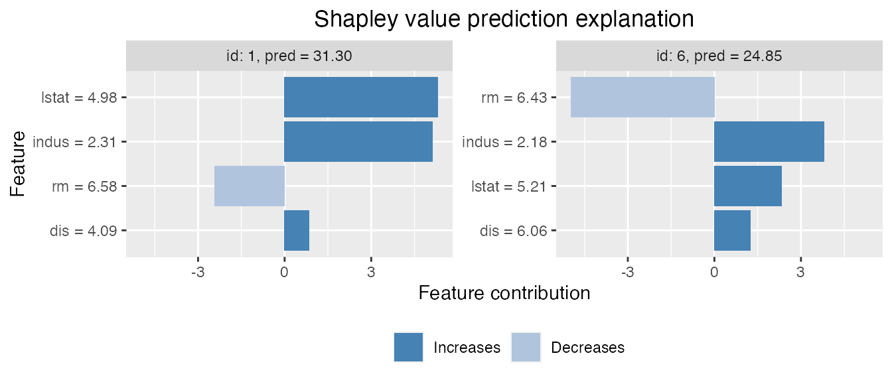
# The MSEv averaged over only the explicands for each combinations
MSEv_plots$MSEv_combination_bar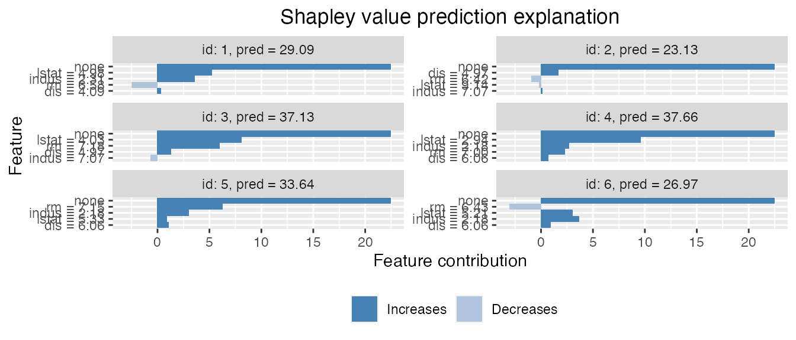
# The MSEv averaged over only the combinations for each observation/explicand
MSEv_plots$MSEv_explicand_bar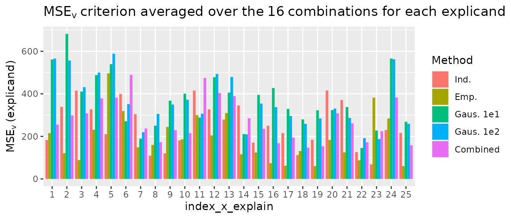
# To see which coalition S each of the `id_combination` corresponds to,
# i.e., which features that are conditions on.
explanation_list_named[[1]]$MSEv$MSEv_combination[, c("id_combination", "features")]
#> id_combination features
#> 1: 2 1
#> 2: 3 2
#> 3: 4 3
#> 4: 5 4
#> 5: 6 1,2
#> 6: 7 1,3
#> 7: 8 1,4
#> 8: 9 2,3
#> 9: 10 2,4
#> 10: 11 3,4
#> 11: 12 1,2,3
#> 12: 13 1,2,4
#> 13: 14 1,3,4
#> 14: 15 2,3,4We can specify the index_x_explain and
id_combination parameters in
plot_MSEv_eval_crit() to only plot certain test
observations and combinations, respectively.
# We can specify which test observations or combinations to plot
plot_MSEv_eval_crit(explanation_list_named,
plot_type = "explicand",
index_x_explain = c(1, 3:4, 6),
CI_level = 0.95
)$MSEv_explicand_bar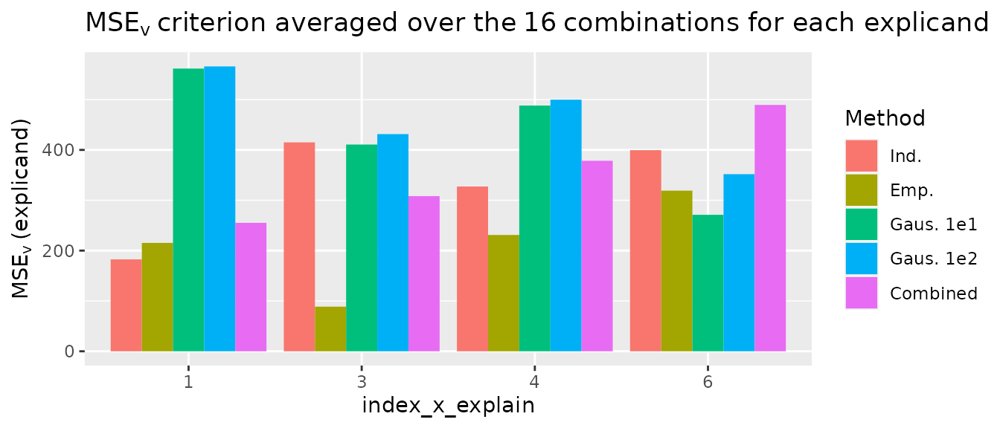
plot_MSEv_eval_crit(explanation_list_named,
plot_type = "comb",
id_combination = c(3, 4, 9, 13:15),
CI_level = 0.95
)$MSEv_combination_bar
#> NULLWe can also alter the plots design-wise as we do in the code below.
bar_text_n_decimals <- 1
CI_level <- 0.95
MSEv_plot <- plot_MSEv_eval_crit(explanation_list_named, CI_level = CI_level)$MSEv_bar
MSEv_plot +
ggplot2::scale_x_discrete(limits = rev(levels(MSEv_plot$data$Method))) +
ggplot2::coord_flip() +
ggplot2::scale_fill_brewer(palette = "Paired") +
ggplot2::theme_minimal() + # This must be set before other theme calls
ggplot2::theme(
plot.title = ggplot2::element_text(size = 10),
legend.position = "bottom"
) +
ggplot2::geom_text(
ggplot2::aes(label = sprintf(
paste("%.", sprintf("%d", bar_text_n_decimals), "f", sep = ""),
round(MSEv, bar_text_n_decimals)
)),
vjust = -0.35, # This number might need altering for different plots sizes
hjust = 1.1, # This number might need altering for different plots sizes
color = "black",
position = ggplot2::position_dodge(0.9),
size = 4
)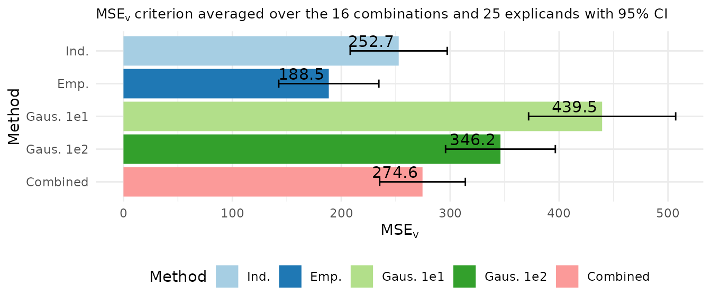
Main arguments in explain
When using explain, the default behavior is to use all
feature combinations in the Shapley formula. Kernel SHAP’s sampling
based approach may be used by specifying n_combinations,
which is the number of unique feature combinations to sample. If not
specified, the exact method is used. The computation time grows
approximately exponentially with the number of features. The training
data and the model whose predictions we wish to explain must be provided
through the arguments x_train and model. The
data whose predicted values we wish to explain must be given by the
argument x_explain. Note that both x_train and
x_explain must be a data.frame or a
matrix, and all elements must be finite numerical values.
Currently we do not support missing values. The default approach when
computing the Shapley values is the empirical approach
(i.e. approach = "empirical"). If you’d like to use a
different approach you’ll need to set approach equal to
either copula or gaussian, or a vector of
them, with length equal to the number of features. If a vector, a
combined approach is used, and element i indicates the
approach to use when conditioning on i variables. For more
details see Combined approach below.
When computing the kernel SHAP values by explain, the
maximum number of samples to use in the Monte Carlo integration for
every conditional expectation is controlled by the argument
n_samples (default equals 1000). The
computation time grows approximately linear with this number. You will
also need to pass a numeric value for the argument
prediction_zero, which represents the prediction value when
not conditioning on any features. We recommend setting this equal to the
mean of the response, but other values, like the mean prediction of a
large test data set is also a possibility. If the empirical method is
used, specific settings for that approach, like a vector of fixed \(\sigma\) values can be specified through
the argument empirical.fixed_sigma. See
?explain for more information. If
approach = "gaussian", you may specify the mean vector and
covariance matrix of the data generating distribution by the arguments
gaussian.mu and gaussian.cov_mat. If not
specified, they are estimated from the training data.
Explaining a forecasting model using
explain_forecast
shapr provides a specific function,
explain_forecast, to explain forecasts from time series
models, at one or more steps into the future. The main difference
compared to explain is that the data is supplied as (set
of) time series, in addition to index arguments (train_idx
and explain_idx) specifying which time points that
represents the train and explain parts of the data. See
?explain_forecast for more information.
To demonstrate how to use the function, 500 observations are
generated which follow an AR(1) structure, i.e. \(y_t = 0.5 y_{t-1} + \varepsilon_t\). To
this data an arima model of order (2, 0, 0) is fitted, and we therefore
would like to explain the forecasts in terms of the two previous lags of
the time series. This is is specified through the argument
explain_y_lags = 2. Note that some models may also put
restrictions on the amount of data required to make a forecast. The
AR(2) model we used there, for instance, requires two previous time
point to make a forecast.
In the example, two separate forecasts, each three steps ahead, are
explained. To set the starting points of the two forecasts,
explain_idx is set to 499:500. This means that
one forecast of \(t = (500, 501, 502)\)
and another of \(t = (501, 502, 503)\),
will be explained. In other words, explain_idx tells
shapr at which points in time data was available up until,
when making the forecast to explain.
In the same way, train_idx denotes the points in time
used to estimate the conditional expectations used to explain the
different forecasts. Note that since we want to explain the forecasts in
terms of the two previous lags (explain_y_lags = 2), the
smallest value of train_idx must also be 2, because at time
\(t = 1\) there was only a single
observation available.
Since the data is stationary, the mean of the data is used as value
of prediction_zero (i.e. \(\phi_0\)). This can however be chosen
differently depending on the data and application.
For a multivariate model such as a VAR (Vector AutoRegressive model),
it may be of more interesting to explain the impact of each variable,
rather than each lag of each variable. This can be done by setting
group_lags = TRUE.
# Simulate time series data with AR(1)-structure.
set.seed(1)
data_ts <- data.frame(Y = arima.sim(list(order = c(1, 0, 0), ar = .5), n = 500))
data_ts <- data.table::as.data.table(data_ts)
# Fit an ARIMA(2, 0, 0) model.
arima_model <- arima(data_ts, order = c(2, 0, 0))
# Set prediction zero as the mean of the data for each forecast point.
p0_ar <- rep(mean(data_ts$Y), 3)
# Explain forecasts from points t = 499 and t = 500.
explain_idx <- 499:500
explanation_forecast <- explain_forecast(
model = arima_model,
y = data_ts,
train_idx = 2:498,
explain_idx = 499:500,
explain_y_lags = 2,
horizon = 3,
approach = "empirical",
prediction_zero = p0_ar,
group_lags = FALSE
)
explanation_forecast
#> explain_idx horizon none Y.1 Y.2
#> 1: 499 1 0.04018 0.5053 -0.07659
#> 2: 500 1 0.04018 -0.3622 0.02497
#> 3: 499 2 0.04018 0.5053 -0.07659
#> 4: 500 2 0.04018 -0.3622 0.02497
#> 5: 499 3 0.04018 0.5053 -0.07659
#> 6: 500 3 0.04018 -0.3622 0.02497Note that for a multivariate model such as a VAR (Vector
AutoRegressive model), or for models also including several exogenous
variables, it may be of more informative to explain the impact of each
variable, rather than each lag of each variable. This can be done by
setting group_lags = TRUE. This does not make sense for
this model, however, as that would result in decomposing the forecast
into a single group.
We now give a more hands on example of how to use the
explain_forecast function. Say that we have an AR(2) model
which describes the change over time of the variable Temp
in the dataset airquality. It seems reasonable to assume
that the temperature today should affect the temperature tomorrow. To a
lesser extent, we may also suggest that the temperature today should
also have an impact on that of the day after tomorrow.
We start by building our AR(2) model, naming it
model_ar_temp. This model is then used to make a forecast
of the temperature of the day that comes after the last day in the data,
this forecast starts from index 153.
data <- data.table::as.data.table(airquality)
model_ar_temp <- ar(data$Temp, order = 2)
predict(model_ar_temp, n.ahead = 2)$pred
#> Time Series:
#> Start = 154
#> End = 155
#> Frequency = 1
#> [1] 71.08111 71.52445First, we pass the model and the data as model and
y. Since we have an AR(2) model, we want to explain the
forecasts in terms of the two previous lags, whihc we specify with
explain_y_lags = 2. Then, we let shapr know
which time indices to use as training data through the argument
train_idx. We use 2:152, meaning that we skip
the first index, as we want to explain the two previous lags. Letting
the training indices go up until 152 means that every point in time
except the first and last will be used as training data.
The last index, 153 is passed as the argument
explain_idx, which means that we want to explain a forecast
made from time point 153 in the data. The argument horizon
is set to 2 in order to explain a forecast of length 2.
The argument prediction_zero is set to the mean of the
time series, and is repeated two times. Each value of
prediction_zero is the baseline for each forecast horizon.
In our example, we assume that given no effect from the two lags, the
temperature would just be the average during the observed period.
Finally, we opt to not group the lags by setting group_lags
to FALSE. This means that lag 1 and 2 will be explained
separately. Grouping lags may be more interesting to do in a model with
multiple variables, as it is then possible to explain each variable
separately.
explanation <- explain_forecast(
model = model_ar_temp,
y = data[, "Temp"],
train_idx = 2:152,
explain_idx = 153,
explain_y_lags = 2,
horizon = 2,
approach = "empirical",
prediction_zero = rep(mean(data$Temp), 2),
group_lags = FALSE,
n_batches = 1,
timing = FALSE
)
print(explanation)
#> explain_idx horizon none Temp.1 Temp.2
#> 1: 153 1 77.88 -6.622 -0.1788
#> 2: 153 2 77.88 -6.025 -0.3327The results are presented per value of explain_idx and
forecast horizon. We can see that the mean temperature was around 77.9
degrees. At horizon 1, the first lag in the model caused it to be 6.6
degrees lower, and the second lag had just a minor effect. At horizon 2,
the first lag has a slightly smaller negative impact, and the second lag
has a slightly larger impact.
It is also possible to explain a forecasting model which uses
exogenous regressors. The previous example is expanded to use an
ARIMA(2,0,0) model with Wind as an exogenous regressor.
Since the exogenous regressor must be available for the predicted time
points, the model is just fit on the 151 first observations, leaving two
observations of Wind to be used as exogenous values during
the prediction phase.
data <- data.table::as.data.table(airquality)
data_fit <- data[seq_len(151), ]
model_arimax_temp <- arima(data_fit$Temp, order = c(2, 0, 0), xreg = data_fit$Wind)
newxreg <- data[-seq_len(151), "Wind", drop = FALSE]
predict(model_arimax_temp, n.ahead = 2, newxreg = newxreg)$pred
#> Time Series:
#> Start = 152
#> End = 153
#> Frequency = 1
#> [1] 77.49992 76.38062The shapr package can then explain not only the two
autoregressive lags, but also the single lag of the exogenous regressor.
In order to do so, the Wind variable is passed as the
argument xreg, and explain_xreg_lags is set to
1. Notice how only the first 151 observations are used for
y and all 153 are used for xreg. This makes it
possible for shapr to not only explain the effect of the
first lag of the exogenous variable, but also the contemporary effect
during the forecasting period.
explanation <- explain_forecast(
model = model_ar_temp,
y = data_fit[, "Temp"],
xreg = data[, "Wind"],
train_idx = 2:150,
explain_idx = 151,
explain_y_lags = 2,
explain_xreg_lags = 1,
horizon = 2,
approach = "empirical",
prediction_zero = rep(mean(data_fit$Temp), 2),
group_lags = FALSE,
n_batches = 1,
timing = FALSE
)
print(explanation$shapley_values)
#> explain_idx horizon none Temp.1 Temp.2 Wind.1 Wind.F1
#> 1: 151 1 77.96026 -0.6779272 -0.6734041 -1.268789 0.4934084
#> 2: 151 2 77.96026 0.3996832 -0.5005937 -1.465464 0.0659129
#> Wind.F2
#> 1: NA
#> 2: -0.4742238Advanced usage
Combined approach
In addition to letting the user select one of the five aforementioned
approaches for estimating the conditional distribution of the data (i.e.
approach equals either "gaussian", "copula", "empirical", "ctree", "categorical") or
"timeseries", the package allows the user to combine the
given approaches. To simplify the usage, the flexibility is restricted
such that the same approach is used when conditioning on the same number
of features. This is also in line Aas, Jullum,
and Løland (2021, sec. 3.4).
This can be done by setting approach equal to a
character vector, where the length of the vector is one less than the
number of features in the model. Consider a situation where you have
trained a model that consists of 10 features, and you would like to use
the "empirical" approach when you condition on 1-3
features, the "copula" approach when you condition on 4-5
features, and the "gaussian" approach when conditioning on
6 or more features. This can be applied by simply passing
approach = c(rep("empirical", 3), rep("copula", 2), rep("gaussian", 4)),
i.e. approach[i] determines which method to use when
conditioning on i features. Conditioning on all features
needs no approach as that is given by the complete prediction itself,
and should thus not be part of the vector.
The code below exemplifies this approach for a case where there are
four features, using "empirical", "copula" and
"gaussian" when conditioning on respectively 1, 2 and 3
features.
# Use the combined approach
explanation_combined <- explain(
model = model,
x_explain = x_explain,
x_train = x_train,
approach = c("empirical", "copula", "gaussian"),
prediction_zero = p0
)
# Plot the resulting explanations for observations 1 and 6, excluding
# the no-covariate effect
plot(explanation_combined, bar_plot_phi0 = FALSE, index_x_explain = c(1, 6))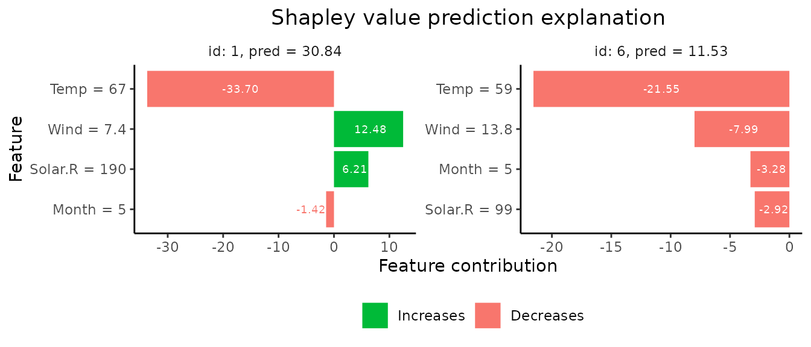
As a second example using "ctree" to conditin on 1 and 2
features, and "empirical" when conditioning on 3
features:
Explain groups of features
In some cases, especially when the number of features is very large,
it may be more appropriate to explain predictions in terms of groups of
features instead of single features, see (Jullum,
Redelmeier, and Aas (2021)) for intuition and real world
examples. Explaining prediction in terms of groups of features is very
easy using shapr:
# Define the feature groups
group_list <- list(
A = c("Temp", "Month"),
B = c("Wind", "Solar.R")
)
# Use the empirical approach
explanation_group <- explain(
model = model,
x_explain = x_explain,
x_train = x_train,
approach = "empirical",
prediction_zero = p0,
group = group_list
)
# Prints the group-wise explanations
explanation_group
#> none A B
#> 1: 47.27 -29.588 13.1628
#> 2: 47.27 -11.834 -15.7011
#> 3: 47.27 -15.976 -17.5729
#> 4: 47.27 -25.067 -5.1374
#> 5: 47.27 -35.848 20.2892
#> 6: 47.27 -27.257 -8.4830
#> 7: 47.27 -14.960 -21.3995
#> 8: 47.27 -18.325 7.3791
#> 9: 47.27 -23.012 9.6591
#> 10: 47.27 -16.189 -5.6100
#> 11: 47.27 -25.607 -10.1334
#> 12: 47.27 -25.065 -5.1394
#> 13: 47.27 -25.841 -0.7281
#> 14: 47.27 -21.518 -13.3293
#> 15: 47.27 -21.248 -1.3199
#> 16: 47.27 -13.676 -16.9497
#> 17: 47.27 -13.899 -14.8890
#> 18: 47.27 -12.276 -8.2472
#> 19: 47.27 -13.768 -13.5242
#> 20: 47.27 -24.866 -10.8744
#> 21: 47.27 -14.486 -22.7674
#> 22: 47.27 -4.122 -14.2893
#> 23: 47.27 -11.218 22.4682
#> 24: 47.27 -33.002 14.2114
#> 25: 47.27 -16.251 -8.6796
#> none A B
# Plots the group-wise explanations
plot(explanation_group, bar_plot_phi0 = TRUE, index_x_explain = c(1, 6))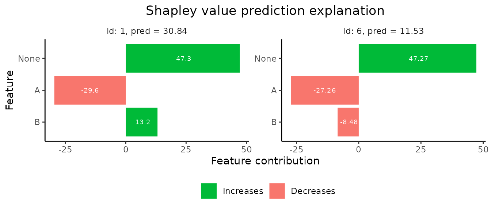
Explain custom models
shapr currently natively supports explanation of
predictions from models fitted with the following functions:
Any continuous response regression model or binary classification model of these model classes, can be explained with the package directly as exemplified above. Moreover, essentially any feature dependent prediction model can be explained by the package by specifying two (or one) simple additional functions for your model.
Note: The below procedure for specifying custom models was
changed in shapr v0.3.0 The first function is
predict_model, taking the model and data (as a
matrix or data.frame/data.table) as input and
outputting the corresponding prediction as a numeric vector. The second
(optional, but highly recommended) function is
get_model_specs, taking the model as input and outputting a
list with the following elements: labels (vector with the
feature names to compute Shapley values for), classes (a named
vector with the labels as names and the class type as elements),
factor_levels (a named list with the labels as names and
vectors with the factor levels as elements (NULL if the feature is not a
factor)). The get_model_specs function is used to check
that the format of the data passed to explain have the
correct format in terms of the necessary feature columns being available
and having the correct class/attributes. It is highly recommended to do
such checks in order to ensure correct usage of explain.
If, for some reason, such checking is not desirable, one does not have
to provide the get_model_specs function. This will,
however, throw a warning that all feature consistency checking against
the model is disabled.
Once the above functions are created, you can explain predictions
from this model as before by passing the functions through the input
arguments predict_model and get_model_specs of
explain().
These functions can be made general enough to handle
all supported model types of that class, or they can be made minimal,
possibly only allowing explanation of the specific version of the model
class at hand. Below we give examples of both full support versions of
these functions and a minimal version which skips the
get_model_specs function. We do this for the
gbm model class from the gbm package, fitted
to the same airquality data set as used above.
library(gbm)
#> Loaded gbm 2.1.9
#> This version of gbm is no longer under development. Consider transitioning to gbm3, https://github.com/gbm-developers/gbm3
formula_gbm <- as.formula(paste0(y_var, "~", paste0(x_var, collapse = "+")))
# Fitting a gbm model
set.seed(825)
model_gbm <- gbm::gbm(
formula_gbm,
data = cbind(x_train, Ozone = y_train),
distribution = "gaussian"
)
#### Full feature versions of the three required model functions ####
MY_predict_model <- function(x, newdata) {
if (!requireNamespace("gbm", quietly = TRUE)) {
stop("The gbm package is required for predicting train models")
}
model_type <- ifelse(
x$distribution$name %in% c("bernoulli", "adaboost"),
"classification",
"regression"
)
if (model_type == "classification") {
predict(x, as.data.frame(newdata), type = "response", n.trees = x$n.trees)
} else {
predict(x, as.data.frame(newdata), n.trees = x$n.trees)
}
}
MY_get_model_specs <- function(x) {
feature_specs <- list()
feature_specs$labels <- labels(x$Terms)
m <- length(feature_specs$labels)
feature_specs$classes <- attr(x$Terms, "dataClasses")[-1]
feature_specs$factor_levels <- setNames(vector("list", m), feature_specs$labels)
feature_specs$factor_levels[feature_specs$classes == "factor"] <- NA # model object doesn't contain factor levels info
return(feature_specs)
}
# Compute the Shapley values
set.seed(123)
p0 <- mean(y_train)
explanation_custom <- explain(
model = model_gbm,
x_explain = x_explain,
x_train = x_train,
approach = "empirical",
prediction_zero = p0,
predict_model = MY_predict_model,
get_model_specs = MY_get_model_specs
)
#> Setting parameter 'n_batches' to 2 as a fair trade-off between memory consumption and computation time.
#> Reducing 'n_batches' typically reduces the computation time at the cost of increased memory consumption.
# Plot results
plot(explanation_custom, index_x_explain = c(1, 6))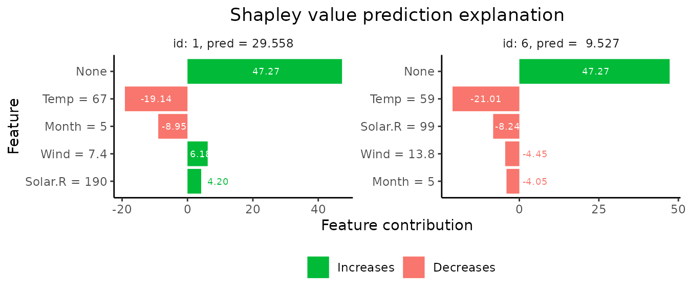
#### Minimal version of the three required model functions ####
# Note: Working only for this exact version of the model class
# Avoiding to define get_model_specs skips all feature
# consistency checking between your data and model
MY_MINIMAL_predict_model <- function(x, newdata) {
predict(x, as.data.frame(newdata), n.trees = x$n.trees)
}
# Compute the Shapley values
set.seed(123)
explanation_custom_minimal <- explain(
model = model_gbm,
x_explain = x_explain,
x_train = x_train,
approach = "empirical",
prediction_zero = p0,
predict_model = MY_MINIMAL_predict_model
)
#> Note: You passed a model to explain() which is not natively supported, and did not supply a 'get_model_specs' function to explain().
#> Consistency checks between model and data is therefore disabled.
#> Setting parameter 'n_batches' to 2 as a fair trade-off between memory consumption and computation time.
#> Reducing 'n_batches' typically reduces the computation time at the cost of increased memory consumption.
# Plot results
plot(explanation_custom_minimal, index_x_explain = c(1, 6))
Scalability and efficency
Batch computation
The computational complexity of Shapley value based explanations
grows fast in the number of features, as the number of conditional
expectations one needs to estimate in the Shapley formula grows
exponentially. As outlined above, the estimating of
each of these conditional expectations is also computationally
expensive, typically requiring estimation of a conditional probability
distribution, followed by Monte Carlo integration. These computations
are not only heavy for the CPU, they also require a lot of memory (RAM),
which typically is a limited resource. By doing the most resource hungry
computations (the computation of v(S)) in sequential batches with
different feature subsets \(S\), the
memory usage can be significantly reduces. Such batching comes at the
cost of an increase in computation time, which depends on the number of
feature subsets (n_combinations), the number of features,
the estimation approach and so on. When calling
shapr::explain(), we allow the user to set the number of
batches with the argument n_batches. The default of this
argument is NULL, which uses a (hopefully) reasonable
trade-off between computation speed and memory consumption which depends
on n_combinations and approach. The
memory/computation time trade-off is most apparent for models with more
than say 6-7 features. Below we a basic example where
n_batches=10:
explanation_batch <- explain(
model = model,
x_explain = x_explain,
x_train = x_train,
approach = "empirical",
prediction_zero = p0,
n_batches = 10
)Parallelized computation
In addition to reducing the memory consumption, the introduction of
the n_batch argument allows computation within each batch
to be performed in parallel. The parallelization in
shapr::explain() is handled by the
future_apply which builds on the future
environment. The future package works on all OS, allows the
user to decide the parallelization backend (mutliple R procesess or
forking), works directly with hpc clusters, and also supports progress
updates for the parallelized task (see below).
Note that, since it takes some time to duplicate data into different
processes/machines when running in parallel, it is not always
preferrable to run shapr::explain() in parallel, at least
not with many parallel sessions (hereby called
workers). Parallelizatiob also increases the memory
consumption proportionally, so you want to limit the number of workers
for that reason too. In a future version of shapr we will
provide experienced based automatic selection of the number of workers.
In the meanwhile, this is all lef to the user, and we advice that
n_batches equals some positive integer multiplied by the
number of workers. Below is a basic example of a parallelization with
two workers.
Progress updates
shapr provides progress updates of the computation of
the Shapley values through the R-package progressr. This
gives the user full control over the visual apperance of the progress
updates, and also intergrates seemlessly with the parallelization
framework future used by shapr (see above).
Note that the progress is updated as the batches are completed, meaning
that if you have choosen n_batches=1, you will not get
intermediate updates, while if you set n_batches=10 you
will get updates on every 10% of the computation.
Progress updates are enabled for the current R-session by running the
command progressr::handlers(local=TRUE), before calling
shapr::explain(). To use progress updates for only a single
call to shapr::explain(), one can wrap the call using
progressr::with_progress as follows:
progressr::with_progress({ shapr::explain() }) The default
appearence of the progress updates is a basic ASCII-based horizontal
progress bar. Other variants can be chosen by passing different strings
to progressr::handlers(), some of which require additional
packages. If you are using Rstudio, the progress can be displayed
directly in the gui with progressr::handlers('rstudio')
(requires the rstudioapi package). If you are running
Windows, you may use the pop-up gui progress bar
progressr::handlers('handler_winprogressbar'). A wrapper
for progressbar of the flexible cli package is also
available progressr::handlers('cli') (requires the
cli package).
For a full list of all progression handlers and the customization
options available with progressr, see the
progressr vignette.
A full code example of using progressr with
shapr is shown below:
library(progressr)
progressr::handlers(global = TRUE)
# If no progression handler is specified, the txtprogressbar is used
# Other progression handlers:
# progressr::handlers('rstudio') # requires the 'rstudioapi' package
# progressr::handlers('handler_winprogressbar') # Window only
# progressr::handlers('cli') # requires the 'cli' package
explanation <- explain(
model = model,
x_explain = x_explain,
x_train = x_train,
approach = "empirical",
prediction_zero = p0,
n_batches = 10
)
#| [=================================>----------------------] 60% Estimating v(S)Comparison to Lundberg & Lee’s implementation
As mentioned above, the original (independence assuming) Kernel SHAP
implementation can be approximated by setting a large \(\sigma\) value using our empirical
approach. If we specify that the distances to all training
observations should be used (i.e. setting
approach = "empirical" and empirical.eta = 1
when using explain, we can approximate the original method
arbitrarily well by increasing \(\sigma\). For completeness of the
shapr package, we have also implemented a version of the
original method, which samples training observations independently with
respect to their distances to test observations (i.e. without the
large-\(\sigma\) approximation). This
method is available by using approach = "independence" in
explain.
We have compared the results using these two variants with the
original implementation of Lundberg and Lee
(2017), available through the Python library shap. As
above, we used the Boston housing data, trained via
xgboost. We specify that all training observations
should be used when explaining all of the 6 test observations. To run
the individual explanation method in the shap Python
library we use the reticulate R-package,
allowing Python code to run within R. As this requires
installation of Python package, the comparison code and results is not
included in this vignette, but can be found here.
As indicated by the (commented out) results in the file above both
methods in our R-package give (up to numerical
approximation error) identical results to the original implementation in
the Python shap library.